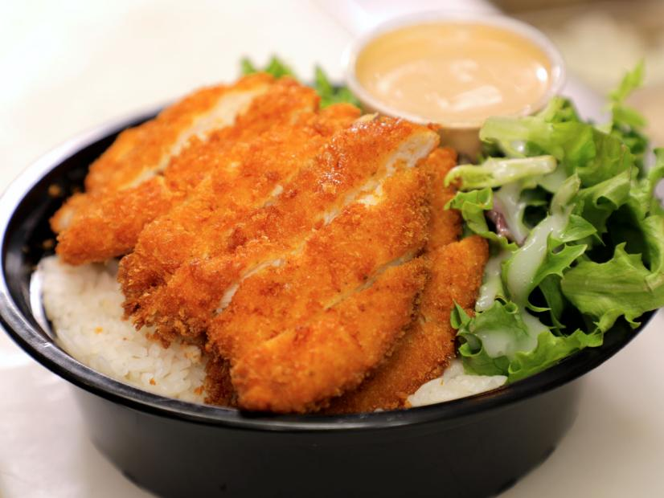

Chicken Katsu

Description
This Hawaiian dish is deep fried chicken breast battered in cripsy panko flakes. It is a staple at many Hawaiian restuarants and is often eaten with rice and macaroni salad. Not only does it taste very good but it is also very simple to make at home in your kitchen.
Despite this being a Hawaiian staple you might have seen another dish that is very similar to this called "tonkatsu" which means pork cutlet. It is a Japanese dish that Chicken katsu is based on, however it is made from pork rather than chicken.
Ingredients
- 1lb Chicken Breast
- Flour
- 1 Egg
- Panko Crumbs
- Salt and Pepper
- Vegetable Oil
- Katsu Sauce(Optional)
Steps
- Flatten your breast until it is about 1/2 inch thick evenly and then season it with salt and pepper to taste.
- Start heating about 1/4 inch of oil in a pan.
- Crack the raw egg into a bowl and whisk it. Put your panko crumbs and flour in seperate bowls next to it too.
- Pat the chicken breast onto the flour covering the whole breast and tap the excess flour off. Repeat with the egg covering the whole chicken breast.
- Once the chicken breast is covered in the raw egg pat it onto the panko crumbs. Try to cover the entire chicken in the panko crumbs.
- The oil should be heated up now, place the chicken breast into the oil and cook both sides for about 3-4 minutes each or until golden brown.
- Let the chicken katsu dry on rack for a bit and then slice it into pieces.
- Your chicken katsu is now done and can be served with rice and katsu sauce. Enjoy.